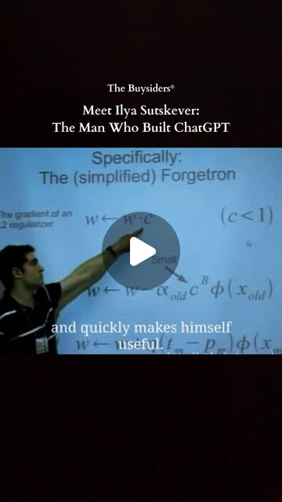
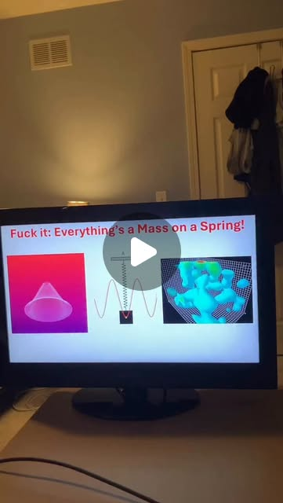
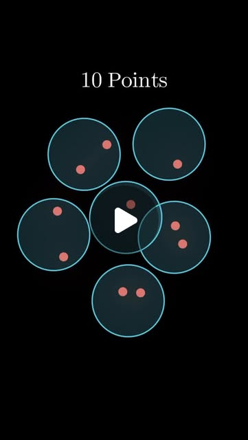
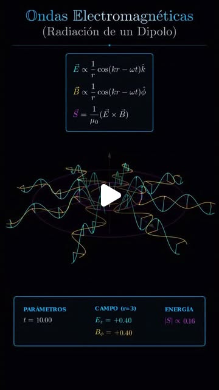

life_leverage
The Incentive Trap: Game Theory for the AI Age
Game theory isn't abstract math — it's the operating system behind every AI product decision, every market move, and every platform play. The entries in this collection reveal the incentive structures hiding in plain sight.
ChatGPT · OpenAI
Try It — Action Sketch
Map the incentive structure before making any decision → identify who benefits from each outcome → look for lock-in mechanisms (Elon's $1 pattern) → study failed strategies to understand what the 'game' actually is → apply physics intuition (equilibria, forces) to strategic situations.
Prerequisites: None — these are mental models, not technical implementations.
Connected Posts (6)
Elon's $1 — Day one is the trap.
Elon's $1.75T IPO is coming this summer. — @upsideinvest.io.

Bro really thought this would work 😭 — luis__de_la_rosa
Bro really thought this would work 😭 — @crimistickman; demonstrates API integration.

ChatGPT — The origins of this moment trace back decades earlier to Geoffrey Hinton, the...
In the summer of 2023, Ilya Sutskever, chief scientist at OpenAI and one of the key architects behind ChatGPT, found ... — @buysiders; uses ChatGPT, OpenAI.

Everything’s a mass on a spring — Get my algebra guide for STEM (link in bio)
Everything’s a mass on a spring! — @thatblackchemist.

Covering 10 points, a surprisingly tricky puzzle — The answer will become clear after you smoke disjoint
Covering 10 points, a surprisingly tricky puzzle — @3blue1brown.

🔷 Radiación dipolar: el motor de la luz 🔷 — Mueve una carga.
🔷 Radiación dipolar: el motor de la luz 🔷 — @merlinomath.
Deeper Dive generated 2026-05-06T13:29:44.678192 · Curated by Claude for Gabe (@6ab3) · dejaviewed.com